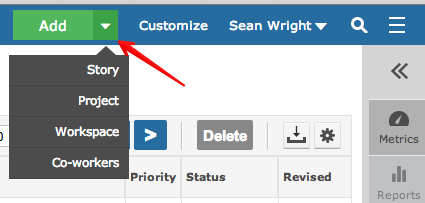
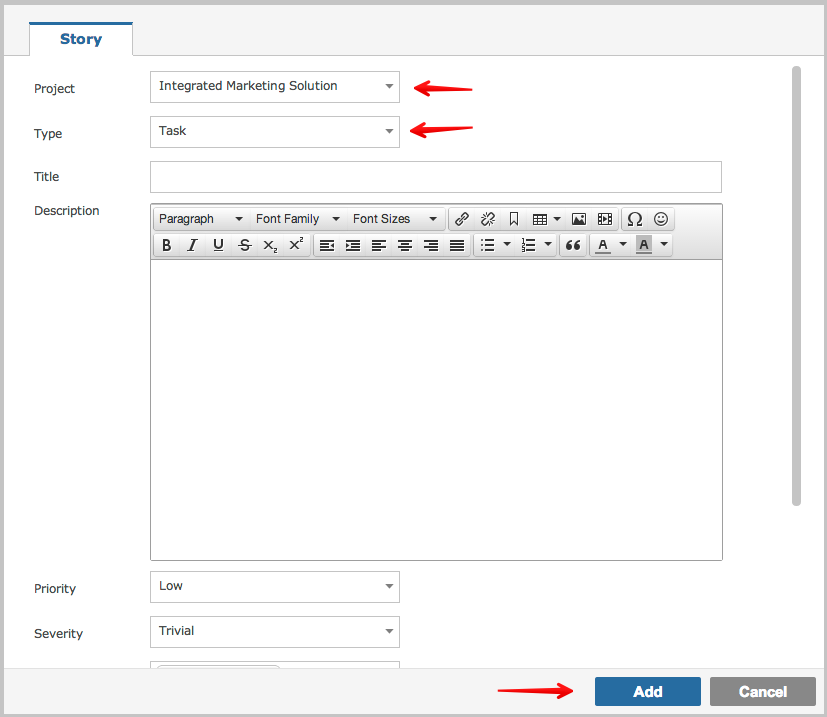
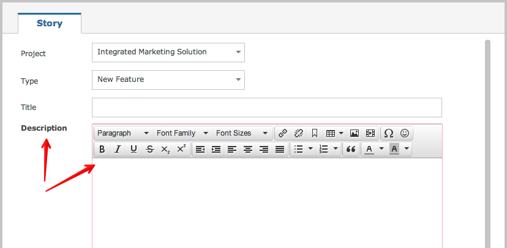
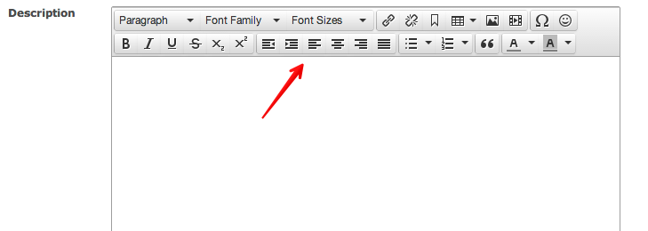
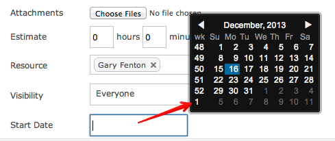

Depending upon your permissions, you can create new items in two ways. Both methods require you to click on the plus sign located top right of every screen.

By default you will be presented with a data entry form that requires completion. Selecting the Project or the Type can change the fields that you are required to provide.

Any missing fields will be highlighted and will require input before the item can be created.

Certain fields allow for rich text content much like Microsoft Word.

Date fields provide pickers that allow you to select any date.
